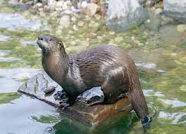
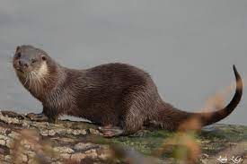
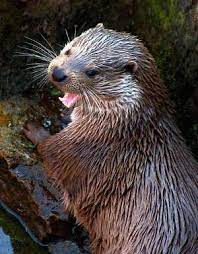
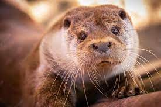

La Nutria
Se caracteriza por su gran tamaño (el cuerpo mide entre 62 y 69 cm y la cola de 37 a 42 cm, y pesa unos 11 kg).
Tiene el pelaje pardo y corto, con una característica mancha blanca en la garganta y membranas entre los dedos de las extremidades anteriores y posteriores.
Se distingue de otros mustélidos acuáticos como el visón por su corpulencia, pelaje más claro, y por nadar con el cuerpo sumergido y la cabeza afuera, mientras que el visón hace emerger medio cuerpo al vadear. Se sumerge con movimientos rápidos, y bucea durante de 10 a 40 segundos.

Hábitat y distribución
Le gustan las aguas cristalinas con fondos pedregosos.
El territorio de los machos puede abarcar unos 15 km. de río, recorriéndolo cada 3 ó 4 noches.
El de la hembra es menor, ocupando unos 7 km. de río.
Utiliza una especie de toboganes, lustrosos y brillantes, para descender desde las pendientes altas y resbaladizas que terminan en el río.
Su madriguera suele estar ubicada al borde del agua, aprovechando cuevas naturales, madrigueras abandonadas, entre la maleza de las isletas de los ríos, etc.; disponen de una abertura para mantener ventilada la guarida.
El suelo del nido suele estar compuesto por hierba seca, o bien con musgo y hojas.
En ellas se suelen encontrar deyecciones, y si hay crías dentro, tienen un olor desagradable y penetrante.

Costumbres y alimentación
Al andar, como el resto de sus parientes, da saltos arqueando todo el cuerpo para contrarrestar el efecto de sus cortas patas.
Se refugia en cuevas entre las rocas, entre raíces o incluso en zarzales.
En algunos sitios hace toboganes trazados en el barro o la nieve para llegar rápidamente al agua.

Han sido especialmente graves en nuestra región los episodios de persecución directa mediante cepos, a veces instalados en el propio nido por colombicultores, o trampas instaladas como medidas de gestión inadecuadas en algunos cotos de caza menor, además de la siembra de venenos, y los disparos, a lo que se añade la desaparición de sus hábitats por urbanizaciones, creación de pistas forestales, choques con tendidos eléctricos, molestias en zonas de cría, etc. Debe pues reducirse la mortalidad, y mejorar sus territorios de nidificación y alimentación, así como sus áreas de dispersión, e invernada, entre las que se encuentra Murcia con una gran responsabilidad de conservación de la especie, si queremos seguir contemplando el vuelo de esta inapreciada rapaz.
